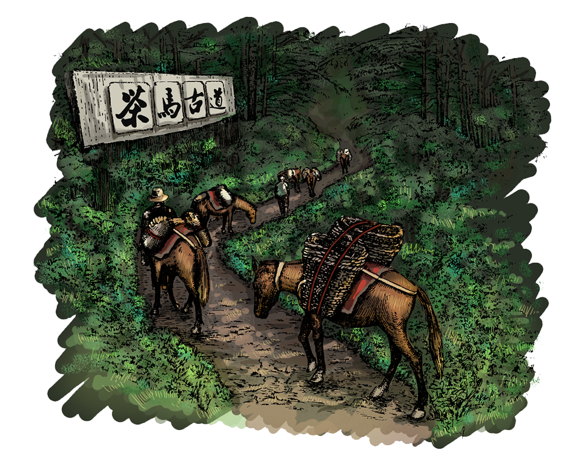
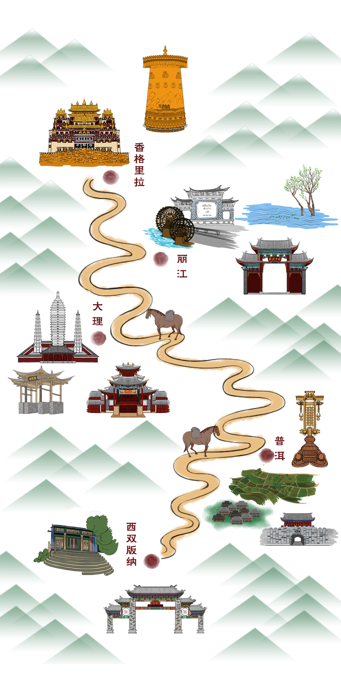
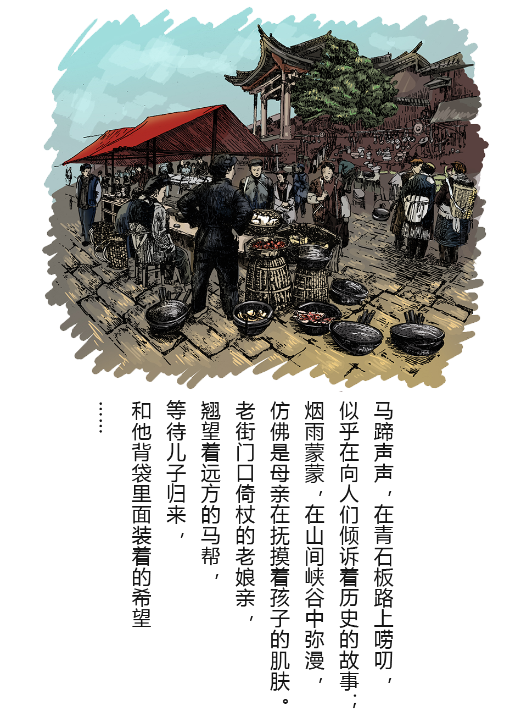
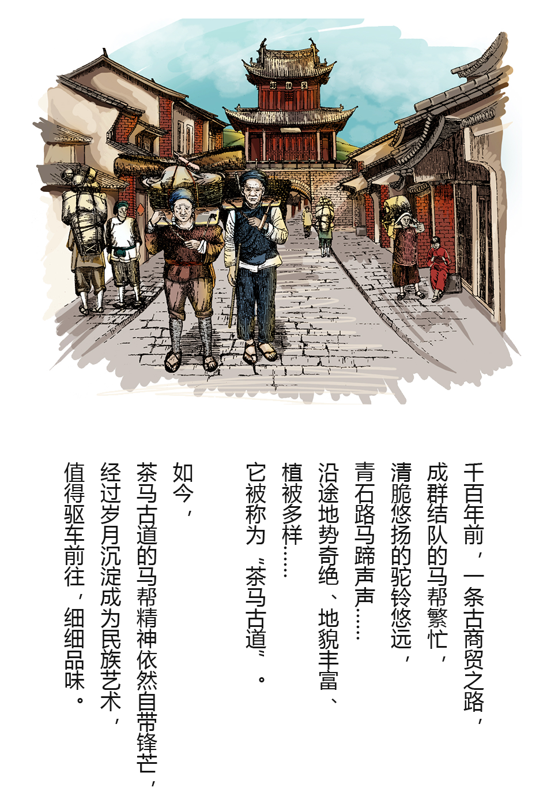
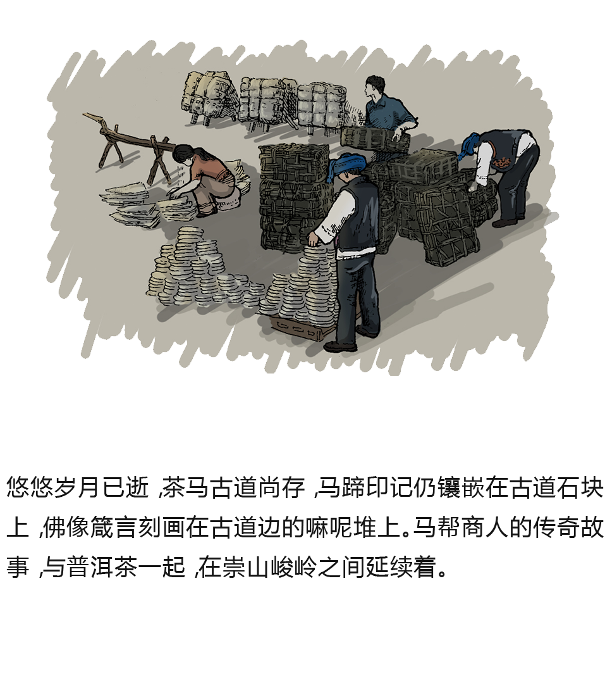

1400多年前，中国西南少数民族以马帮的形式，将云南的普洱茶带进了西藏及缅甸、尼泊尔、印度等地，又将这些地方的特产带回云南，开辟了一条商贸通道，被后人称之为“茶马古道”。 它起源于唐，形成于宋明，在清代达到鼎盛。茶马古道是亚洲大陆最古老神奇的商道，也是中国知名线性文化遗址之一。

茶马古道滇藏线，南起云南茶叶主产区西双版纳易武、普洱市，途径大理白族自治州和丽江市、香格里拉进入西藏，直达拉萨，部分从西藏转口印度、尼泊尔，是古代中国与南亚地区一条重要的贸易通道，是连接横断山脉与喜马拉雅山脉两大民族文化带的走廊。现如今，茶马古道青石路上的印记虽已斑驳、茶香也已飘散，但随着时光流转、旧物变迁，它的气息却因此变得芬芳浓郁、神秘丰富。茶马古道带给我们的精神积淀、自然大观、民族文化，会一直亘古长存。



